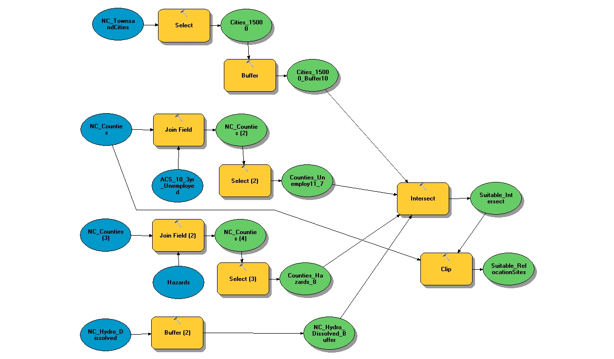
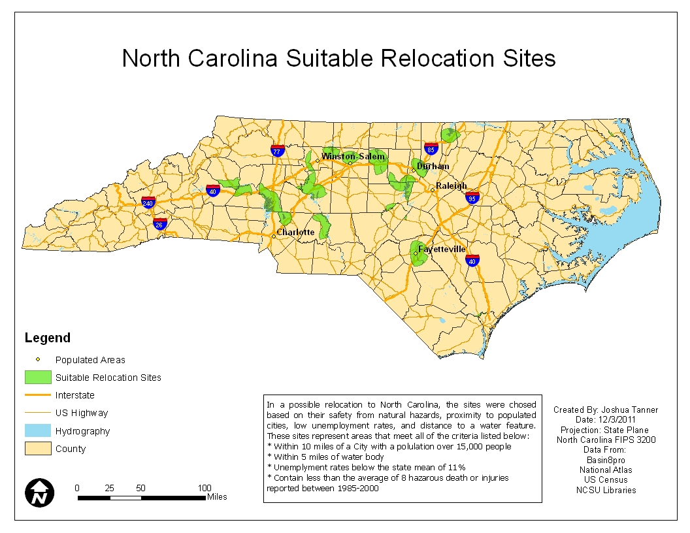

Finding Suitable Relocation Sites in North Carolina
Introduction
As part of my courswork in GIS 510, I wanted to perform a suitability analysis study to determine the most secure and optimal location to live in North Carolina based on a defined set of criteria:- Within 10 miles of a populated city (15,000 people or more)
- Within 5 miles of water
- Within a county below the NC average (11.7%) unemployment rate
- Within a county that is below the average for natural hazard incidents (deaths + injuries)
Analysis
To identify suitable sites, the following model was built using Esri's Model Builder:
Results
The final output provides an interesting analysis of North Carolina, showing that criteria used for this analysis limit the relocation sites mostly to central North Carolina. This is due mainly to hazard events along the coast and Appalachian regions, but the other factors also played an important role in these sites. The results also support the concept that larger populations surround water bodies, and these clusters of larger populations tend to have a lower unemployment rate.